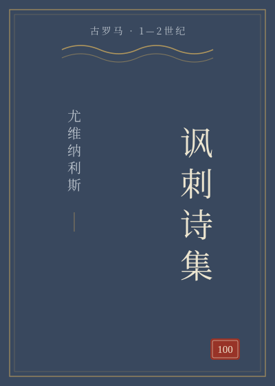
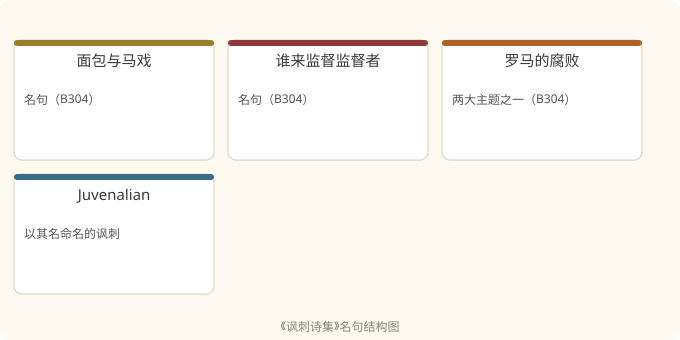

讽刺诗集
一、基本信息
| 作者 | 尤维纳利斯 |
|---|---|
| 成书/出版 | 卷一发表于100—110年间（Britannica：Book One issued between 100 and 110；卷五提及127年） Juvenal — Encyclopaedia Britannica（百科全书） |
| 国别/地区 | 古罗马 |
| 时代 | 古代 · 1—2世纪 |
| 体裁 | 讽刺诗集 |
| 语言 | 拉丁语 |

《讽刺诗集》名句结构图（主题·结构图）
二、创作背景
Britannica（B304）：'The Satires attack two main themes: the corruption of society in the city of Rome and the follies and brutalities of mankind'（谴责罗马社会的腐败与人类的愚蠢残忍——B304）。
名句（B304）：'bread and circuses'（面包与马戏）、'Who will guard the guards themselves?'（谁来监督监督者）、'a sound mind in a sound body, and a brave heart'、'Slow rises worth, by poverty oppressed'、'The greatest reverence is due to a child'。
'Juvenalian satire'以其名命名（B304 语境）——对薄伽丘、布瓦洛、拜伦的影响（B304 语境）。
三、内容脉络
16首讽刺诗：罗马的腐败、富有与世袭贵族（B304：the vice, crime, misuse of wealth, and cult of hereditary nobility）。
四、主要人物表
| 人物 | 身份 | 说明 |
|---|---|---|
| 尤维纳利斯 | 讽刺诗人 | （B304） |
五、主题与艺术特点
- 罗马的腐败与人类的残忍（B304）。
- '面包与马戏'（B304 名句）。
- '谁来监督监督者'（B304 名句）。
六、影响与评论
- Britannica：'Juvenalian satire'以其名命名——对后世讽刺文学影响（B304 语境）。
Juvenal — Encyclopaedia Britannica（百科全书） - Britannica：警句流传（'bread and circuses'等——B304）。
Juvenal — Encyclopaedia Britannica（百科全书）
七、阅读建议
难点
- 罗马社会史。
- 讽刺的修辞（sermo）。
- 《尤维纳利斯讽刺诗》（人民文学出版社，通说待核）。
- 拉丁文原版（公有领域）。
罗马讽刺诗首选。
八、待核实
- 16首篇目（第三首《罗马之夜》等）核对。
- 放逐原因（潘托米姆斯事件说）待核。
- 名句拉丁原文逐条核对。
本页主要来源
尤维纳利斯的其他收录作品：讽刺诗集